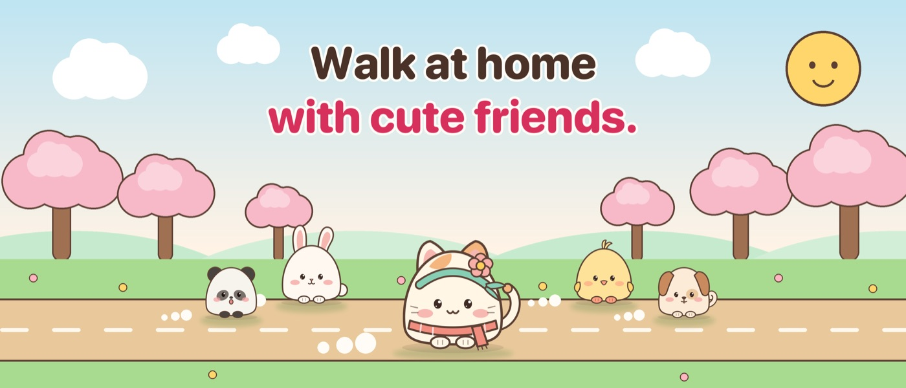

Mochi Dash
A gentle home walking app for iPhone. Walk in place, and Mochi the calico cat runs on screen with you.

Fact sheet
- App
- Mochi Dash
- Developer
- Independent developer, Vietnam
- Release
- October 2026
- Platform
- iPhone, iOS 17 or later
- Category
- Health & Fitness
- Price
- Free. Optional Mochi Plus: $2.99 a month, $19.99 a year (7-day free trial), or $39.99 once. Prices vary by country.
- Languages
- English, 简体中文, Français, Deutsch, Bahasa Indonesia, 日本語, 한국어, Português (Brasil), Español, Tiếng Việt
- Privacy
- No account, no data collected. Camera frames are read on the iPhone and never saved or sent.
- App Store
- apps.apple.com/app/id6823511402
- Contact
- Email us
Descriptions
Free to copy as is or edit to fit.
English
Short · 49 characters
Walk in place at home, and a kawaii cat runs too.
Medium · 149 characters
Mochi Dash turns walking in place into a cozy race. Your iPhone camera reads your steps, and Mochi the calico cat runs on screen as fast as you move.
Long
Mochi Dash turns walking in place at home into a cozy race with kawaii friends. It is made for people who move little, beginners, and anyone who finds workouts intimidating. Prop up the iPhone a few meters away and walk or jog in place: Apple's on-device Vision reads your knee lifts, and Mochi, a round calico cat, runs through a picture-book world as you move. Lift your knees over puddles and logs, race up to three friends, or take a calm solo walk of 1 to 15 minutes. A forgiving day streak, levels that open new friends, outfits and tracks, and a Home Screen widget bring you back each day. With Walk time, distracting apps stay locked at a chosen hour until you have walked a few minutes. No account and no data collected. Available in 10 languages.
Tiếng Việt
Ngắn · 45 ký tự
Đi bộ tại chỗ ở nhà, mèo Mochi chạy cùng bạn.
Vừa · 146 ký tự
Mochi Dash biến đi bộ tại chỗ thành cuộc đua nhỏ dễ thương. Camera iPhone đọc bước chân, mèo tam thể Mochi chạy trên màn hình nhanh đúng bằng bạn.
Dài
Mochi Dash biến việc đi bộ tại chỗ ở nhà thành một cuộc đua nhỏ cùng những người bạn dễ thương. App dành cho người ít vận động, người mới bắt đầu, và bất kỳ ai thấy tập luyện là chuyện khó. Dựng iPhone cách vài mét rồi đi bộ hoặc chạy nhẹ tại chỗ: Vision của Apple đọc độ nhấc gối ngay trên máy, và Mochi, chú mèo tam thể tròn xoe, chạy qua thế giới như tranh truyện theo từng bước của bạn. Nhấc gối vượt vũng nước và khúc gỗ, đua cùng tối đa ba người bạn, hoặc đi bộ một mình thật nhẹ nhàng từ 1 đến 15 phút. Chuỗi ngày dễ giữ, lên cấp để gặp bạn mới, phụ kiện và đường chạy mới, cùng widget ngoài màn hình chính nhắc bạn quay lại mỗi ngày. Với Giờ đi bộ, các app gây xao nhãng bị khoá vào giờ bạn chọn cho đến khi bạn đi bộ vài phút. Không cần tài khoản, không thu thập dữ liệu. Có 10 ngôn ngữ.
Key features
- Your body is the controller. The front camera reads steps and knee lifts from 2 to 3 meters away, all on the iPhone.
- Made to be seen from across the room. Big numbers and voice cues in 10 languages.
- Gentle by design. Every session is a calm walk with high knees. 1 to 15 minutes, no gear.
- Friends to make. Mochi, Bun, Kiko, Poppy, Pando and Ichigo open as you level up, plus 32 accessories to dress them in.
- Walk time. At a chosen hour, other apps stay locked until you walk a few minutes, or do a few squats on a busy day (Mochi Plus).
- Comes back with you. Day streak, activity map, monthly recap picture and Home Screen widgets.
Screenshots
Tap one for the full-size PNG (1206 × 2622). All languages are in the zip files above.


Art and video
App icon
PNG, 1024 × 1024

Mochi
Transparent PNG, 1200 px

Header art
PNG, 3840 × 1646

Three screens
PNG, 3840 × 2560
Demo video
Recorded on a real iPhone: Walk time, squats, a race
Please keep the art as is: no cropping of characters, no recoloring. Mochi Dash and the character names are not translated.